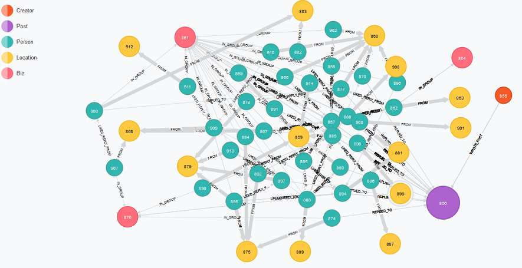

This summer, I've been lucky enough to intern in the Infrastructure, Architecture, and Engineering Labs at BNY Mellon. I wanted to take this post to reflect on my work thus far and put some goals for the rest of the summer on paper.
I originally started working with the Cloud team developing a Proof-of-Concept Openstack deployment on our lab systems. It consisted of a lot of long phone calls with Redhat and VMWare trying to get VMWare's NSX to integrate with RH's Openstack components. After reading a lot of Openstack docs, I was eventually able to understand Neutron and how it worked with NSX. I then moved over to working on a mixture of Heat template work and scripting with the Swift Python API. Unfortunately, I didn't get to spend as much time with OpenStack as I would have liked to as my other projects took over. If I have some free time in the remainder of the summer I'd like to work on the Heat Openstack component some more and try to develop for it.
A large portion of my time was spent building a Splunk log analysis dashboards for a newly created business group at BNY. While Splunk isn't a tool I would particularly want to work with again (too many quirks and I want to stay away from operational/QA work), I learned a lot about regular expressions and SQL from it. It was also neat knowing that my work would be impactful as there were only 3 of us on the project and over a trillion dollars goes through the group on some days.
The last two projects I worked on both had to do with graph databases. Originally, my mentor gave me the task of putting our cloud server data into a graph DB, neo4j, so that analyzing network dependencies would be easier than if a typical RDBM had been used.
About two weeks after beginning this project, I was lucky enough to run into the bank's CIO Suresh Kumar at an internal conference. After describing my graph work to him, he suggested that I create a graph DB, similar to Facebook's Social Graph, for BNY's new internal social network. An example of this can be seen below:
The project has grown very rapidly and more members have now joined the team with me. I'm just starting my Applied Math minor next semester, so learning about graphs and things like clustering coefficients and Small World graphs has been a treat for me. I'm going to try to get involved with Neo4j's opensource development as much as possible in the next few weeks and hopefully continue with it during the fall semester.